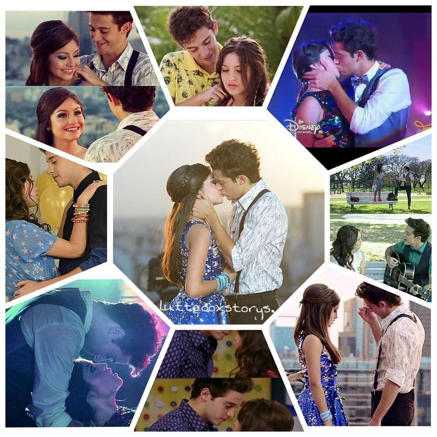

|
|
Luna Y matteo-Cancion Quedate

Ah-ah-ah
Oh-uh-nah-ah
Ah-ah-ah, ah-ah
Sabías que
Conté las veces en que te vi
Desde el día en que te conocí
Y sueño que estás mirando a mí
Sabías que
El día en que llegaste, amor
El cielo cambió de color
No pude ya engañar al corazón
Arriésgalo todo es lo que siento
Si he de perder, sé que va a doler
No te imaginas cuánto, cuánto
Quédate un momento más aquí
Porque al fin entendí
Que contigo detengo el tiempo
Quédate conmigo, di que sí
Porque al fin entendí
Que si no, ya te perdí
Sabías que
Parece que olvidaste ya
Toda nuestra felicidad
No me enseñaste a vivir sin ti
Sabías que
Antes nos conocíamos
Por horas nos mirábamos
Tu risa lo era todo para mí
Arriésgalo todo es lo que siento
Si he de perder, sé que va a doler
No te imaginas cuánto, cuánto
Quédate un momento más aquí
Porque al fin entendí
Que contigo detengo el tiempo
Quédate conmigo, di que sí
Porque al fin entendí
Que si no, ya te perdí
Oh-uoh-uoh
Dime como fue, si me equivoqué
Duele tanto tu silencio
¿Dónde está el amor
Que soñábamos
Juntos tú y yo? (Oh-oh)
Quédate un momento más aquí
Porque al fin entendí
Que contigo detengo el tiempo
Quédate conmigo, di que sí
Porque al fin entendí
Que si no, ya te perdí
Uh-uh-uh (Uoh, no, no)
Oh-oh, no
Quédate
|